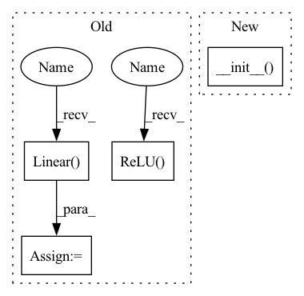

Pattern ID :25126

Before Change
self.channels = channels
self.k = k
self.fc1 = nn.Linear(channels, channels // reduction)
self.relu = nn.ReLU(inplace=True)
self.fc2 = nn.Linear(channels // reduction, 2*k)
self.sigmoid = nn.Sigmoid()
self.channels = channels
After Change
class DyReLUA(DyReLU):
def __init__(self, channels, reduction=4, k=2, conv_type="2d"):
super(DyReLUA, self).__init__(channels, reduction, k, conv_type)
self.fc2 = nn.Linear(channels // reduction, 2*k)
def forward(self, x):
assert x.shape[1] == self.channels
In pattern: SUPERPATTERN
Frequency: 3
Non-data size: 4
Instances
Fragment ID: 76925300
Project Name: islanna/dynamicrelu
Commit Name: 1ee4394be4c9e5517d7dc2e5605416b65b321e53
Time: 2020-04-14
Author: slizhikova.a.v@gmail.com
File Name: dyrelu.py
M Class Name: DyReLUA
N Class Name: DyReLUA
M Method Name: __init__(5)
N Method Name: __init__(4)
M Parent Class: DyReLU
N Parent Class: nn.Module
M File Name: dyrelu.py
N File Name: dyrelu.py
M Start Line: 7
M End Line: 18
N Start Line: 37
N End Line: 38
'>
Before Change
self.channels = channels
self.k = k
self.fc1 = nn.Linear(channels, channels // reduction)
self.relu = nn.ReLU(inplace=True)
self.fc2 = nn.Linear(channels // reduction, 2*k*channels)
self.sigmoid = nn.Sigmoid()
self.register_buffer("lambdas", torch.Tensor([1.]*k + [0.5]*k).float())
After Change
class DyReLUB(DyReLU):
def __init__(self, channels, reduction=4, k=2, conv_type="2d"):
super(DyReLUB, self).__init__(channels, reduction, k, conv_type)
self.fc2 = nn.Linear(channels // reduction, 2*k*channels)
def forward(self, x):
assert x.shape[1] == self.channels
'>
Fragment ID: 76925302
Project Name: islanna/dynamicrelu
Commit Name: 1ee4394be4c9e5517d7dc2e5605416b65b321e53
Time: 2020-04-14
Author: slizhikova.a.v@gmail.com
File Name: dyrelu.py
M Class Name: DyReLUB
N Class Name: DyReLUB
M Method Name: __init__(5)
N Method Name: __init__(4)
M Parent Class: DyReLU
N Parent Class: nn.Module
M File Name: dyrelu.py
N File Name: dyrelu.py
M Start Line: 40
M End Line: 50
N Start Line: 56
N End Line: 57
'>
Before Change
for d in dims[:-1]:
proj_layers.append(nn.Linear(d,d, bias=False)),
proj_layers.append((nn.BatchNorm1d(d))),
proj_layers.append(nn.ReLU(inplace=True))
embeds = nn.Linear(dims[-2], dims[-1], bias=num_class > 0)
proj_layers.append(embeds)
self.head = nn.Sequential(
*proj_layers
)
self.out = nn.Linear(dims[-1], num_class)
def forward(self, x):
features = self.encoder(x)
embeds = self.head(features)
After Change
class CutPasteNet(_CutPasteNetBase):
// forward outputs: (logits, embeds)
def __init__(self, encoder="resnet18", pretrained=True, dims=[512, 512, 512, 512, 512, 512, 512, 512, 128], num_class=3):
super().__init__(encoder, pretrained, dims, num_class)
return
def forward(self, x):
features = self.encoder(x)
'>
Fragment ID: 76925305
Project Name: lilityolyan/cutpaste
Commit Name: 7266df86ac2c99e58830182d164f7efba0e2fa83
Time: 2022-01-25
Author: lg93lggt@163.com
File Name: model.py
M Class Name: CutPasteNet
N Class Name: CutPasteNet
M Method Name: __init__(5)
N Method Name: __init__(5)
M Parent Class: _CutPasteNetBase
N Parent Class: nn.Module
M File Name: model.py
N File Name: model.py
M Start Line: 7
M End Line: 21
N Start Line: 49
N End Line: 50